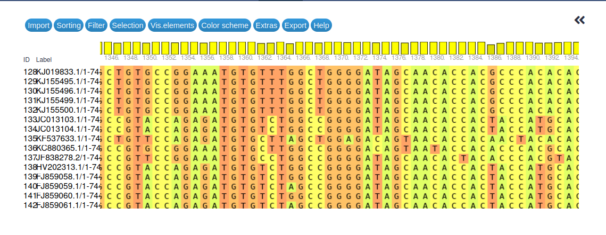

Primer and primer scheme design for pan-specific detection and sequencing of viral pathogens across genotypes
| Author(s) |
|
OverviewQuestions:
Objectives:
What are pan-specific primers and primer schemes and why are they important?
How to capture viral species diversity in the form of a multiple sequence alignment?
How to design primers that will be mostly unaffected by differences between viral genotypes?
How to avoid generating primers with off-target binding sites?
Requirements:
Reproduce published qPCR primers and primer schemes for polio virus using MAFFT and varVAMP
Gain the knowledge and confidence to create your own primers and primer schemes
Time estimation: 1 hourLevel: Introductory IntroductorySupporting Materials:Published: Mar 20, 2025Last modification: Mar 20, 2025License: Tutorial Content is licensed under Creative Commons Attribution 4.0 International License. The GTN Framework is licensed under MITversion Revision: 2
Modern molecular, DNA and RNA-based methods have seen ever increasing use, over the last decades, in the detection and analysis of viral pathogens. Most of these methods rely on PCR for amplification of viral DNA/RNA and are, thus, dependent on primers that recognize viral targets reliably and selectively. Designing such primers can be challenging if the diversity of viral genotypes that need to be recognized by the primers is high.
Quantitative real-time PCR (qPCR) is a very well established tool for detection of viral pathogens and for estimating viral load in samples. In its most widely used form in molecular diagnosis, qPCR requires two primers for amplification of a stretch of viral genetic material and an additional oligonucleotide probe that recognizes the amplified sequence and is itself used for fluorescence-based detection. Hence, in this case, three oligonucleotide sequences need to be designed that must recognize all viral genotypes of interest.
More recently, starting with the Zika virus epidemic from 2015 to 2016 and boosted by the 2020-2023 SARS-CoV-2 pandemic, tiled-amplicon sequencing has emerged as a powerful method for reconstructing full viral genomes directly from samples obtained from patients (Quick et al. 2017). This method relies on multiplex PCRs to obtain amplification products (amplicons) that together cover (nearly) the complete genome of the viral pathogen. Overlap between amplicons (tiling) is required to achieve gap-free genome reconstruction and overlapping amplicons are generated in separate multiplex PCR reactions (pools) to avoid interaction of products during PCR. In this case each single amplicon is generated from two primers that, ideally, all need to be able to recognize all relevant viral genotypes and should, as far as possible not interact with other primers present in the same amplification pool. To illustrate the complexity involved, consider the example of SARS-CoV-2: version 5.3.2 of the ARTIC network’s SARS-CoV-2 primer scheme defines 192 primers that generate 48 amplicons in each of two amplification pools and all these primers should bind efficiently to the genome sequences of all currently (first half of 2024) circulating omicron lineages (see the v5.3.2 primer scheme announcement for the full details).
While SARS-CoV-2 is an extremely well-studied example, many other viral pathogens display a far greater sequence diversity than that of existing SARS-CoV-2 lineages making it even harder to come up with pan-specific primer sets for reliable amplification of arbitrary samples of unknown genotype. The three serotypes of poliovirus (PV-1, PV-2 and PV-3), for example, share only ~70% pairwise sequence identity with one another (compared to still ~ 99% for current SARS-CoV-2 lineages).
In this tutorial we investigate a robust bioinformatics approach that lets you design pan-specific PCR primers or entire primer schemes for viral pathogens with high sequence diversity. The design process starts from known genome sequences of viral isolates, which are supposed to represent the existing sequence diversity of the viral pathogen across its genotypes. From these sequences, we build a multiple sequence alignment, which then serves as input to the primer design tool varVAMP. This tool will try to identify possible primer sites that are conserved enough to work across genotypes while considering user-specified constraints like amplicon sizes for tiled-amplicon sequencing or desired qPCR probe characteristics.
AgendaIn this tutorial, we will cover:
Data and Galaxy preparation
Prepare a new Galaxy history
Any analysis should get its own Galaxy history. So let’s start by creating a new one:
Hands On: Prepare the Galaxy history
Create a new history for this analysis
To create a new history simply click the new-history icon at the top of the history panel:
Rename the history
- Click on galaxy-pencil (Edit) next to the history name (which by default is “Unnamed history”)
- Type the new name:
viral-primer-scheme-design tutorial- Click on Save
- To cancel renaming, click the galaxy-undo “Cancel” button
If you do not have the galaxy-pencil (Edit) next to the history name (which can be the case if you are using an older version of Galaxy) do the following:
- Click on Unnamed history (or the current name of the history) (Click to rename history) at the top of your history panel
- Type the new name:
viral-primer-scheme-design tutorial- Press Enter

Get viral reference sequences
Hands On: Get the Polio 1 sequence alignment
Import the Polio 1 sequence alignment from
https://raw.githubusercontent.com/jonas-fuchs/ViralPrimerSchemes/79db0cc128079d770f2282b68a6e28142fd77473/input_alignments/polio1.alnand make sure the dataset format is set to
fasta.
- Copy the link location
Click galaxy-upload Upload Data at the top of the tool panel
- Select galaxy-wf-edit Paste/Fetch Data
Paste the link(s) into the text field
Change Type (set all): from “Auto-detect” to
fastaPress Start
- Close the window
Rename the dataset
- Click on the galaxy-pencil pencil icon for the dataset to edit its attributes
- In the central panel, change the Name field to
Polio 1 alignment- Click the Save button
Transform aligned sequences into unaligned FASTA format
For the primer design, we need a multiple sequence alignment (MSA), which we can generate with MAFFT (Katoh and Standley 2013). The data we just downloaded consists of already aligned sequences, but we want to follow here a complete primer design workflow. That’s why, as our very first step, we will undo the alignment to obtain just a simple collection of viral sequences, then use MAFFT to recreate the alignment. To undo the existing alignment we will use one tool from the EMBOSS tool suite, a powerful and versatile collection of little tools to manipulate and analyze sequence data.
Hands On: Degap the aligned Polio1 genome sequences
- degapseq ( Galaxy version 5.0.0) with the following parameters:
- param-file “On query”:
Polio 1 alignment(Input Polio 1 dataset)- “Output sequence file format”:
FASTA (m)Rename the dataset
- Click on the galaxy-pencil pencil icon for the dataset to edit its attributes
- In the central panel, change the Name field to
Polio 1 unaligned- Click the Save button
Designing a pan-specific primer/probe combination for qPCR
Multiple alignment of reference sequences
Now lets (re)create the multiple sequence alignment. varVAMP, the tool that will then design primers for us, needs the MSA to identify regions that are conserved enough between all the different viral genomes to offer candidate pan-specific primer binding sites. To generate an MSA, we align the previously unaligned genome datasets with MAFFT. MAFFT is a very popular program for multiple sequence alignment that gives the user the choice between many different alignment algorithms. For our purposes, we can, essentially, just use the default settings of the tool.
Hands On: Generate multiple sequence alignment
- MAFFT ( Galaxy version 7.526+galaxy1) with the following parameters:
- param-file “Sequences to align”:
Polio 1 unaligned(the output of the EMBOSS degapseq tool)- “Type of sequences”:
auto-detectorNucleic acids- “MAFFT flavour”:
FFT-NS-2 (fast, progressive method)- “Output format”:
FASTARename the dataset
- Click on the galaxy-pencil pencil icon for the dataset to edit its attributes
- In the central panel, change the Name field to
Polio 1 MSA- Click the Save button
That was easy to set up and the tool run should not take very long with the FFT-NS-2 alignment algorithm. MAFFT is a very powerful tool though and it may be worth considering not so simple usage scenarios. If you are mostly interested in using varVAMP, you can safely skip the following detail boxes, but if you want to learn more about using MAFFT, read on.
With our Polio 1 data we had all the sequences that we wanted to align in a single multi-sequence FASTA dataset and could simply pass this one dataset to MAFFT. In many situations you will be downloading the starting sequences one by one and have them organized as a collection of single-sequence datasets. We can split out all our Polio 1 sequences into a collection to mimick this situation, then tweak the tool interface of MAFFT slightly to align them from that collection.
Hands On: Create a MSA from a collection of input sequences
- Split file to dataset collection ( Galaxy version 0.5.2) with the following parameters:
- “Select the file type to split”:
FASTA- param-file “FASTA file to split”:
Polio 1 unaligned(the output of the EMBOSS degapseq tool)This will create a separate dataset for each of our Polio 1 sequences and put them all into a collection.
- MAFFT ( Galaxy version 7.526+galaxy1) with the following parameters:
- “For multiple inputs generate”:
a single MSA of all sequences from all inputs
- In “Input batch”:
- param-repeat *“1: Input batch”
- param-collection “Sequences to align”: the collection of individual Polio 1 sequences (the output of the Split file tool run)
- “Type of sequences”:
auto-detectorNucleic acids- “MAFFT flavour”:
FFT-NS-2 (fast, progressive method)- “Output format”:
FASTAThe above steps should result in the same MSA that you created from the multi-sequence FASTA dataset. The tool also supports more complex input scenarios like collections of multi-sequence datasets where you want to create a collection of MSAs, one per input collection element, for which you’d use the “For multiple inputs generate”:
one or several MSAs depending on input structure, and others.
MAFFT is a program that offers different methods to align sequences. These methods differ in terms of their speed and accuracy.
The progressive methods, including the default setting
FFT-NS-2, can align large numbers of sequences in relatively short time. These methods are the fastest but also have somewhat reduced accuracy (especially theFFT-NS-1method, which only does a single round of guide tree and alignment construction). The defaultFFT-NS-2method (with two rounds of guide tree and alignment construction) is often a good compromise between speed and accuracy.The iterative refinement methods,
FFT-NS-iandNW-NS-i, first generate a progressive alignment like the fast methods above, but then improve its accuracy over several refinement rounds.The slowest methods are those that also evaluate the consistency of the multiple sequence alignment with pairwise alignments of the sequences during the iterative refinement phase. The three implementations of this approach (
L-INS-i,E-INS-iandG-INS-i) differ in the algorithm that they use to generate the pairwise sequence alignments (local alignment with affine gap costs, local alignment with generalized affine gap costs, or global alignment, respectively). These methods are the most accurate ones for difficult alignments with many gaps. However, they are also very slow, which means that, in practice, their use is restricted to alignments of small numbers of sequences (a few hundred maximum).You can find more information about the individual methods in the MAFFT manual.
Our polio 1 sequence alignment is ready for further use, but let us take a closer look at it before we proceed with the primer design. To explore multiple sequence alignments, Galaxy offers a convenient interactive visualization.
Hands On: Visualize the multiple sequence alignment
- Click on the MAFFT output to expand this dataset
- Click on galaxy-barchart Visualize
- Maximize the browser window (the visualization we are about to launch may not rescale properly if you do this later!)
- Select Multiple Sequence Alignment as the visualization
- Wait for the alignment to finish loading
- You can now navigate through the alignment with its horizontal and vertical scroll-bars, or by dragging the alignment itself around. Vertical navigation can also be done with the keyboard and you can go to any base position in the alignment directly via Extras -> Jump to a column.
Take your time to familiarize yourself with the navigation options, then use them to compare your alignment to the view in the figure below.

Open image in new tabFinally, before we proceed with the actual primer design, here are some questions regarding the multiple sequence alignment and its generation.
Question
- How many sequences were aligned and over what length?
- In the alignment visualization, what are those vertical bars in the top row above the base positions?
- Does the alignment give reason to believe that pan-specific primers for detection of all polio 1 sequences can be found?
In total 241 sequences were aligned. You can expand the MSA dataset to get this number directly from Galaxy or you can scroll down to the last sequence in the MSA visualization.
The alignment has a total length of 7498 bases. You can scroll horizontally through the visualization, then read off the rightmost position to get this value.
If you want to know the length of the individual sequences instead of the alignment length (which includes gaps), you can, for example, run:
Hands On: Get sequence lengths from a FASTA input
- Compute sequence length ( Galaxy version 1.0.4)
- “Compute length for these sequences”:
Polio 1 unaligned(the output of the EMBOSS degapseq tool)Note that you need to select the unaligned sequences as input to the tool in order to avoid having gaps counted towards the sequence lengths.
The output of this extra step will be a tabular dataset with the names of sequences in the first and their lengths in the second column. This simple format could then be processed further with various other tools (like Datamash tool) to obtain some descriptive statistics of the lengths.
- The height of the bars indicates the sequence conservation at that site, with taller bars representing higher conservation.
- The alignment shows generally good conservation among the different polio 1 virus sequences and it looks like it should be possible to find at least some conserved primer sites.
One-step primer and probe design for qPCR
Variable VirusAMPlicons (varVAMP) is a tool to design primers for highly diverse viruses. The input required is an alignment of your viral (full-genome) sequences.
As a first step, we want to use the tool to design qPCR primer/probe schemes based on our polio 1 sequence alignment.
For many virus genera, it is challenging to design pan-specific primers. varVAMP addresses this issue by introducing ambiguous characters into primers and minimizing mismatches at the 3’ end. While the primers may not work for all sequences in your input alignment, they should recognize the vast majority.
varVAMP offers three different modes:
- SINGLE: varVAMP searches for the best primers and reports non-overlapping amplicons suitable for PCR-based screening approaches.
- TILED: Using a graph-based approach, varVAMP designs overlapping (tiled) amplicons that together cover the entire (as much as possible) viral genome. These amplicons are ideal for Oxford Nanopore or Illumina-based full-genome sequencing.
- QPCR: varVAMP searches for small amplicons with an optimized internal probe (TaqMan). It minimizes temperature differences between the primers and checks for secondary structures in the amplicons.
Hands On: Generate qPCR primer/probe set
- varVAMP ( Galaxy version 1.2.2+galaxy0) with the following parameters:
- param-file “Multiple alignment of viral sequences”:
Polio 1 MSA(output of MAFFT tool)- “What kind of primers would you like to design? (varvamp mode)”:
qPCR primers (qpcr)
- “How to set the main parameters, threshold for consensus nucleotides and max ambiguous nts per primer?”:
Specify values for both- “Threshold for consensus nucleotides”:
0.93- “Maximum number of ambiguous nucleotides per primer to be tolerated”:
2- “Maximum number of ambiguous nucleotides per qPCR probe to be tolerated”:
1Move outputs to a dataset collection
Oh, that’s a lot of outputs!
Since, in this tutorial, we are going to run varVAMP several times with different settings it would be easy to get lost in all the output datasets if we are not organizing things a bit. So for the purpose of this tutorial, whenever a run of varVAMP has completed, we will move all of that run’s output datasets into a collection. Let’s do so for the varVAMP outputs just generated:
- Wait for all the varVAMP outputs to turn green
Move the outputs to a collection
- Click on galaxy-selector Select Items at the top of the history panel
- Check all outputs of the varVAMP run just finished
Click n of N selected and choose Build Dataset List
- Enter a name for your collection
- Click Create collection to build your collection
- Click on the checkmark icon at the top of your history again


As you can see varVAMP offers a wide range of outputs. For example, it is possible to obtain the locations of the designed primers and amplicons in BED file format or an overview plot of all possible amplicons as PDF. These outputs provide detailed information about the regions of interest and other potential primers. The varVAMP “Analysis Log” file contains information about the tool’s settings and procedures and is always included with the outputs. Take some time to review the different types of outputs and get familiar with the results.
Comment: Output controlCheck your output files by comparing them with the example files from the varVAMP-qPCR-output GitHub page for Polio 1 virus. There you can check if you created the same primers. The primer locations can be found in the BED file “primers.bed”. These primers were designed using varVAMP version 0.7.
Here a few additional questions for you to check your results and assess your understanding
Question
- How long are the three different amplicons?
- Why are there primers for three different amplicons and not just one?
- Given the penalty scores of the different amplicons, which of them should be used for qPCR?
- There are so many configuration options for varVAMP. How can you quickly check which exact settings were in use for a given run of varVAMP?
- The first amplicon has a length of 93 bases, the second 142 bases and the third is 77 bases long, as you can see in the file “qPCR amplicon details”.
- varVAMP shows all amplicons it could find (well, up to 50 if you are not changing the “Top n qPCR amplicons to test” parameter) that fulfill the specified conditions like threshold or amplicon length. In our case three amplicons fulfill all conditions.
The penalty score of each amplicon is simply the sum of the 3 penalty scores of its oligonucleotides. Lower values are better than higher ones for both the individual scores as well as for their sum. Regarding just the overall penalty score, scheme 0, starting at position 1743 (1-based position), has the best value with 6.7 and would be the prefered scheme to use. However, it is also useful to take a closer look at the file “primer details” to compare the number of ambiguous bases, individual penalty scores and melting temperatures per oligonucleotide, especially for the probe.
varVAMP uses different formats to report nucleotide positions in its different outputs, which can be a bit confusing if you are not familiar with interval file formats. The BED format specification requires 0-based positions (i.e. the first base in a sequence has position 0) and regions are specified with non-inclusive ends. In other words, a sequence region covering everything from the first base through the fifth would be represented as 0 (Start) - 5 (non-inclusive End) in BED format, while you would probably have written it as 1 - 5 in your regular notes. As you can see from the above, you can
- calculate the length of a region in BED format simply by subtracting Start from End
- transform BED format to 1-based, end-inclusive form by simply adding 1 to the Start position
varVAMP sticks to the format specification for all its BED outputs, but uses standard 1-based, end-inclusive format in all tabular reports. That is why qPCR scheme 0 in our case is reported with 1742 (Start) - 1835 (End) in the “Amplicon locations” BED output, for example, but with 1743 (start) - 1835 (stop) in the tabular “qPCR amplicon details” output.
- The “Analysis Log” output lists all settings of all parameters that varVAMP used during that run.
Advanced approach considering potential off-target binding sites of primers
Imagine that we want to design our qPCR so that it reliably detects Polio 1 virus, but not non-polio enteroviruses.
With varVAMP, it is possible to use a BLAST database as an off-target background sequence collection. Using the tool NCBI BLAST+ makeblastdb (Cock et al. 2015), we can create a BLAST database containing the genome sequences of other enteroviruses. varVAMP can then match primers it identifies against this off-target database, and take predicted off-target binding sites into account when ranking amplicons. For this, varVAMP sorts potential primers first by presence of off-target effects, then by their penalty scores, which makes sure that amplicons containing off-target effect primers are always reported after any other amplicons.
Lets do this step-by-step. First, you need to upload some enterovirus genome data into Galaxy.
Hands On: Get the genome sequences of non-polio enteroviruses
Import the sequences from Zenodo
https://zenodo.org/records/14845698/files/entero_genomes.fastaas a dataset of type
fasta.
- Copy the link location
Click galaxy-upload Upload Data at the top of the tool panel
- Select galaxy-wf-edit Paste/Fetch Data
Paste the link(s) into the text field
Change Type (set all): from “Auto-detect” to
fastaPress Start
- Close the window
Rename the dataset (optional)
- Click on the galaxy-pencil pencil icon for the dataset to edit its attributes
- In the central panel, change the Name field to
Enterovirus genome sequences- Click the Save button
Next, build the BLAST database from the uploaded sequences and use it with varVAMP.
Hands On: Build BLAST enterovirus database and (re-)design primers using it
- NCBI BLAST+ makeblastdb ( Galaxy version 2.14.1+galaxy2) with the following parameters:
- “Molecule type of input”:
nucleotide
- param-repeat Select Input
- “Input is a”:
Dataset in history- “FASTA input”:
Enterovirus genome sequences- “Title for BLAST database”:
Enterovirus genome dbRename the dataset
- Click on the galaxy-pencil pencil icon for the dataset to edit its attributes
- In the central panel, change the Name field to
Enterovirus genome db- Click the Save button
- varVAMP ( Galaxy version 1.2.2+galaxy0) with the following parameters:
- param-file “Multiple alignment of viral sequences”:
Polio 1 MSA- “What kind of primers would you like to design? (varvamp mode)”:
qPCR primers (qpcr)
- “How to set the main parameters, threshold for consensus nucleotides and max ambiguous nts per primer?”:
Specify values for both
- “Threshold for consensus nucleotides”:
0.93- “Avoid amplicons with off-target primer products?”:
Yes
- “BLAST database”: the output of NCBI BLAST+ makeblastdb
Enterovirus genome dbMove outputs to a dataset collection
- Click on galaxy-selector Select Items at the top of the history panel
- Check all outputs of the varVAMP run just finished
Click n of N selected and choose Build Dataset List
- Enter a name for your collection
- Click Create collection to build your collection
- Click on the checkmark icon at the top of your history again
A quick look at the “Amplicon locations” output shows that, again, varVAMP has found three suitable qPCR schemes. Now compare them to the ones from the previous run to see if anything changed.
Tip: Galaxy’s galaxy-scratchbook Window Manager, which you can enable (and disable again) from the menu bar can be very helpful for comparing multiple datasets.
You can also inspect the “qPCR amplicon details” output to get more information about the suggested amplicons.
Question
- Is there a difference between the primers/amplicons suggested in the first varVAMP run (without a database of enteroviral background sequences) and the new run?
- Does the output contain amplicons with predicted off-target effects?
- Why didn’t varVAMP design primers without off-target binding sites?
- What settings can be modified to generate more possible primers?
- No, the primers generated without consideration of off-target sites are identical to those generated with such consideration.
- Yes, all amplicons are predicted to have off-target effects (see the “qPCR amplicon details” output).
- Before varVAMP can account for off-target sites, it must consider settings such as the threshold and the maximum number of ambiguous nucleotides. These settings resulted in only three amplicons, all of which show off-target effects.
- Our threshold for consensus sequences is set to 0.93, which is quite high. Lowering this threshold would likely generate more potential primer schemes. As an alternative we could increase the maximum number of ambiguous nucleotides allowed per primer.
Now let’s experiment with a lower consensus nucleotide threshold to try and generate additional primer schemes and see if some of these maybe come without off-target amplification products. Lowering the threshold may lead to primer schemes with less power to amplify all posssible Polio 1 (i.e., on-target) sequences, but values above 0.7 are typically still acceptable, depending on the specific use case. Since the default threshold value is 0.8, let’s proceed with this setting.
Hands On: qPCR primer design with BLAST db and lower threshold
- varVAMP ( Galaxy version 1.2.2+galaxy0) with the following parameters:
- param-file “Multiple alignment of viral sequences”:
Polio 1 MSA- “What kind of primers would you like to design? (varvamp mode)”:
qPCR primers (qpcr)
- “How to set the main parameters, threshold for consensus nucleotides and max ambiguous nts per primer?”:
Specify values for both
- “Threshold for consensus nucleotides”:
0.8- “Avoid amplicons with off-target primer products?”:
Yes
- “BLAST database”: the output of NCBI BLAST+ makeblastdb
Enterovirus genome dbCreating a dataset collection
- Click on galaxy-selector Select Items at the top of the history panel
- Check all the datasets in your history you would like to include
Click n of N selected and choose Build Dataset List
- Enter a name for your collection to varVAMP Polio1 qpcr threshold 0.8 + BLAST
- Click Create collection to build your collection
- Click on the checkmark icon at the top of your history again
The newly designed primer schemes can be checked again with the files “qPCR amplicon details” and “Primer details”. We have prepared some questions for you to assess your understanding:
Question
- What is the difference with a lower threshold? Did you get a primer scheme with no predicted off-target amplification?
- Why doesn’t the amplicon collection include the amplicons that we generated with the higher threshold?
- Consider other use cases for avoiding off-targets using a BLAST database.
- Can we find a better qPCR scheme if we allow varVAMP to estimate the consensus threshold?
- With the lower threshold, we generated more potential primer schemes, including four with no predicted off-target effects.
- The lower threshold leads to more potential amplicons that can achieve better scores than those with a higher threshold (but will potentially recognize a lower fraction of the genome sequences in the multiple-sequence alignment). The primers generated with the higher threshold are not considered in the new varVAMP run with the lower threshold because all of them had predicted off-target binding and relatively high scores.
- You may, for example, want to prepare primers that amplify specific viral genome sequences in the presence of host DNA, in which case you could build an off-target BLAST database from host genome sequences.
- We can run the following to let varVAMP estimate the optimal consensus threshold for us:
Hands On: qPCR primer design with BLAST db and auto-estimated threshold
- varVAMP ( Galaxy version 1.2.2+galaxy0) with the following parameters:
- param-file “Multiple alignment of viral sequences”:
Polio 1 MSA- “What kind of primers would you like to design? (varvamp mode)”:
qPCR primers (qpcr)- “How to set the main parameters, threshold for consensus nucleotides and max ambiguous nts per primer?”:
Specify max ambiguous nts, estimate suitable threshold- “Avoid amplicons with off-target primer products?”:
Yes- “BLAST database”: the output of NCBI BLAST+ makeblastdb
Enterovirus genome dbWhen the tool run is finished you can inspect its “Analysis Log” output to learn that the estimated threshold is 0.92 so just 0.01 lower than our initial choice. If you then inspect the “qPCR amplicon details” output, you should find that this small difference enabled varVAMP to find 5 primer schemes instead of three, one of which has no predicted off-target effects.
Since the auto-estimated threshold of 0.92 is considerably higher than our second attempt of 0.8, the new qPCR scheme will likely recognize more of our polio 1 sequences and, thus, will likely be preferable over the ones found with the lower threshold.
Designing a complete pan-specific primer scheme for tiled-amplicon sequencing
To explore additional varVAMP functionality, we will now design primers for another use case using the TILED flavour. This flavour is designed to cover the entire genome of our input data. Therefore, the resulting primers are suitable for Oxford Nanopore or Illumina-based full-genome sequencing.
Comment: Online repositories of established primer schemesFor many genomes, existing primer schemes are already available online, so you don’t have to generate them by yourself. For example, you can explore various schemes from the Quick lab, pha4ge, and ARTIC-network primer scheme repositories.
To focus on designing the primer scheme, we will skip the multiple sequence alignment step this time and begin with the pre-aligned Polio 1-3 sequences available as part of the ViralPrimerScheme repository.
Hands On: Get Polio 1-3 sequence alignment
Get the Polio 1-3 sequence alignment from
https://raw.githubusercontent.com/jonas-fuchs/ViralPrimerSchemes/9b54b17246abdff1b39c6cdd362fff67eb2945c3/input_alignments/polio1-3.alnand upload it to your history via the link above and make sure the dataset format is set to
fasta.
- Copy the link location
Click galaxy-upload Upload Data at the top of the tool panel
- Select galaxy-wf-edit Paste/Fetch Data
Paste the link(s) into the text field
Change Type (set all): from “Auto-detect” to
fastaPress Start
- Close the window
Rename the dataset
- Click on the galaxy-pencil pencil icon for the dataset to edit its attributes
- In the central panel, change the Name field to
Polio 1-3 alignment- Click the Save button
In this varVAMP run, we will use the TILED flavour. Similar to the qPCR primer design, you can determine the number of ambiguous nucleotides and set a threshold for consensus nucleotides. However, this time we will only specify the maximum number of ambiguous nucleotides and allow the threshold to be automatically estimated.
Hands On: Primer design with the TILED-flavour for whole genome amplification
- varVAMP ( Galaxy version 1.2.2+galaxy0) with the following parameters:
- param-file “Multiple alignment of viral sequences”: the
Polio 1-3 alignmentjust uploaded- “What kind of primers would you like to design? (varvamp mode)”:
Tiled primer scheme for whole-genome sequencing (tiled)
- “How to set the main parameters, threshold for consensus nucleotides and max ambiguous nts per primer?”:
Specify max ambiguous nts, estimate suitable threshold- “Maximum number of ambiguous nucleotides per primer to be tolerated (default: 2)”:
2Creating a dataset collection
- Click on galaxy-selector Select Items at the top of the history panel
- Check all the datasets in your history you would like to include
Click n of N selected and choose Build Dataset List
- Enter a name for your collection to varVAMP Polio1-3 tiled
- Click Create collection to build your collection
- Click on the checkmark icon at the top of your history again
Comment: Dataset collectionIf you create a dataset collection at this point, you cannot include the “per-pool primer sequences”, as this is already a dataset collection containing two files with the primer sequences for each pool.
Once again, we have prepared some questions for you to verify your results and deepen your understanding of the output:
Question
- How many primers are used to cover the whole Polio genome?
- What is encoded in the column named “score” in the “Amplicon locations” output.
- How long are the amplicons for the tiled primer scheme and for qPCR and why do they differ in size?
- What’s the difference of the functionality of the qPCR and TILED modes?
- If you want to tailor the generated tiling scheme to your experimental needs, which are the main options you would want to tweak?
- varVAMP (at version 1.2.2) suggests 7 primer pairs to amplify nearly the whole Polio virus genome. The “Amplicon design overview plot” offers a nice view of the tiled scheme.
- The score indicates whether the primer pair for an amplicon belongs to pool 1 or 2.
- For the tiled primer scheme, the amplicons are between 1100 and 1500 bases long, while for qPCR, they covered around 100 bases. The difference in length exists because the goal of the tiled primer scheme is to cover the entire genome without using too many primers that might interact. In contrast, qPCR focuses on detecting the presence of matching DNA in a sample and the amplicons are kept short to enhance the amplification process.
- The qPCR mode generates small amplicons with an optimized internal probe, while the TILED mode produces overlapping amplicons designed for whole-genome sequencing.
- You could increase the length of the amplicons, their minimum required overlap, the consensus threshold, or reduce the maximum number of ambiguous nucleotides per primer.
Conclusion
The combination of the tools MAFFT and varVAMP offers a way to design primers and entire primer schemes that have a high chance of working across a set of diverse viral genotypes. You may still have to play with varVAMP’s settings a bit to obtain optimal primers, or have to modify a resulting primer scheme a little by hand, and you might have to perform some wetlab-based optimizations (such as adjusting primer concentrations for certain amplicons), but this in-silico tool chain simplifies the task substantially.
You've Finished the Tutorial
Key points
Robust pan-specific primers and primer schemes are crucial for preventing false-negatives in diagnostic settings and ensuring adequate coverage of samples in sequencing projects
A multiple sequence alignment that accurately captures the underlying sequence diversity of the viral pathogen of interest is essential for designing effective pan-specific primers and primer schemes
varVAMP is an excellent tool for automating the design of primers and whole primer schemes based on multiple sequence alignments of representative viral genotypes
By providing varVAMP with a BLAST database of off-target sequences, you can minimize the risk of designing primers that bind to these unintended sequences
Frequently Asked Questions
Have questions about this tutorial? Have a look at the available FAQ pages and support channelsUseful literature
Further information, including links to documentation and original publications, regarding the tools, analysis techniques and the interpretation of results described in this tutorial can be found here.
References
- Katoh, K., and D. M. Standley, 2013 MAFFT Multiple Sequence Alignment Software Version 7: Improvements in Performance and Usability. Molecular Biology and Evolution 30: 772–780. 10.1093/molbev/mst010
- Cock, P. J. A., J. M. Chilton, B. Grüning, J. E. Johnson, and N. Soranzo, 2015 NCBI BLAST+ integrated into Galaxy. GigaScience 4: 10.1186/s13742-015-0080-7
- Quick, J., N. D. Grubaugh, S. T. Pullan, I. M. Claro, A. D. Smith et al., 2017 Multiplex PCR method for MinION and Illumina sequencing of Zika and other virus genomes directly from clinical samples. Nature Protocols 12: 1261–1276. 10.1038/nprot.2017.066
Feedback
Did you use this material as an instructor? Feel free to give us feedback on how it went.
Did you use this material as a learner or student? Click the form below to leave feedback.
Citing this Tutorial
- Verena Moosmann, Elischa Berger, Wolfgang Maier, Primer and primer scheme design for pan-specific detection and sequencing of viral pathogens across genotypes (Galaxy Training Materials). https://training.galaxyproject.org/training-material/topics/sequence-analysis/tutorials/viral_primer_design/tutorial.html Online; accessed TODAY
- Hiltemann, Saskia, Rasche, Helena et al., 2023 Galaxy Training: A Powerful Framework for Teaching! PLOS Computational Biology 10.1371/journal.pcbi.1010752
- Batut et al., 2018 Community-Driven Data Analysis Training for Biology Cell Systems 10.1016/j.cels.2018.05.012
@misc{sequence-analysis-viral_primer_design, author = "Verena Moosmann and Elischa Berger and Wolfgang Maier", title = "Primer and primer scheme design for pan-specific detection and sequencing of viral pathogens across genotypes (Galaxy Training Materials)", year = "", month = "", day = "", url = "\url{https://training.galaxyproject.org/training-material/topics/sequence-analysis/tutorials/viral_primer_design/tutorial.html}", note = "[Online; accessed TODAY]" } @article{Hiltemann_2023, doi = {10.1371/journal.pcbi.1010752}, url = {https://doi.org/10.1371%2Fjournal.pcbi.1010752}, year = 2023, month = {jan}, publisher = {Public Library of Science ({PLoS})}, volume = {19}, number = {1}, pages = {e1010752}, author = {Saskia Hiltemann and Helena Rasche and Simon Gladman and Hans-Rudolf Hotz and Delphine Larivi{\`{e}}re and Daniel Blankenberg and Pratik D. Jagtap and Thomas Wollmann and Anthony Bretaudeau and Nadia Gou{\'{e}} and Timothy J. Griffin and Coline Royaux and Yvan Le Bras and Subina Mehta and Anna Syme and Frederik Coppens and Bert Droesbeke and Nicola Soranzo and Wendi Bacon and Fotis Psomopoulos and Crist{\'{o}}bal Gallardo-Alba and John Davis and Melanie Christine Föll and Matthias Fahrner and Maria A. Doyle and Beatriz Serrano-Solano and Anne Claire Fouilloux and Peter van Heusden and Wolfgang Maier and Dave Clements and Florian Heyl and Björn Grüning and B{\'{e}}r{\'{e}}nice Batut and}, editor = {Francis Ouellette}, title = {Galaxy Training: A powerful framework for teaching!}, journal = {PLoS Comput Biol} }
Funding
These individuals or organisations provided funding support for the development of this resource
Congratulations on successfully completing this tutorial!
You can use Ephemeris's
shed-tools installcommand to install the tools used in this tutorial.shed-tools install [-g GALAXY] [-a API_KEY] -t <(curl https://training.galaxyproject.org/training-material/api/topics/sequence-analysis/tutorials/viral_primer_design/tutorial.json | jq .admin_install_yaml -r)Alternatively you can copy and paste the following YAML
--- install_tool_dependencies: true install_repository_dependencies: true install_resolver_dependencies: true tools: - name: split_file_to_collection owner: bgruening revisions: 2dae863c8f42 tool_panel_section_label: Collection Operations tool_shed_url: https://toolshed.g2.bx.psu.edu/ - name: emboss_5 owner: devteam revisions: 63dd26468588 tool_panel_section_label: EMBOSS tool_shed_url: https://toolshed.g2.bx.psu.edu/ - name: fasta_compute_length owner: devteam revisions: 5cbde03c1103 tool_panel_section_label: FASTA/FASTQ tool_shed_url: https://toolshed.g2.bx.psu.edu/ - name: ncbi_blast_plus owner: devteam revisions: cbf3f518b668 tool_panel_section_label: NCBI Blast tool_shed_url: https://toolshed.g2.bx.psu.edu/ - name: varvamp owner: iuc revisions: c1f08498cd74 tool_panel_section_label: Virology tool_shed_url: https://toolshed.g2.bx.psu.edu/ - name: mafft owner: rnateam revisions: 1233363389c1 tool_panel_section_label: Multiple Alignments tool_shed_url: https://toolshed.g2.bx.psu.edu/